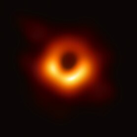

<!DOCTYPE html>
<html lang="en">
  <head>
    <meta charset="UTF-8" />
    <meta
      name="viewport"
      content="width=device-width, user-scalable=no, initial-scale=1.0, maximum-scale=1.0, minimum-scale=1.0"
    />
    <meta http-equiv="X-UA-Compatible" content="ie=edge" />
    <title>HTML Lesson</title>
  </head>
  <body></body>
</html>
<!DOCTYPE html>
<html lang="en">
  <head>
    <meta charset="UTF-8" />
    <meta name="viewport" content="width=device-width, initial-scale=1.0" />
    <title>HTML Blog Page</title>
  </head>
  <body background="assets/dark-galaxy.gif">
    <article>
      <div>
      <h1><font color="white"> Así es la primera foto de un agujero negro, captada por el Event Horizon Telescope: "Un absoluto monstruo" tres millones de veces más grande que la Tierra </font></h1>
      <hr>
      <p><font color="white"> Un equipo internacional de astrónomos obtuvo la primera fotografía de un agujero negro. <br>
        Se trata de un agujero negro supermasivo 6.500 millones de veces más masivo que el Sol. <br>
        
        El horizonte de sucesos tiene un diámetro de 40.000 millones de km, ocho veces más que el tamaño del Sistema Solar, y ha sido descrito por los científicos como "un monstruo".</font></p>
        <figure>
        
        <figcaption><font color="white">Agujero supermasivo en la galaxia M87 tomada por EHT &copy;</figcaption>
        </figure>
        <p><font color="white">
          El agujero negro se encuentra a 55 millones de años luz de nuestro planeta y fue fotografiado por un proyecto internacional que combinó el poder de una red que cuenta con ocho radiotelescopios alrededor del mundo.

        El nombre de la iniciativa es Telescopio del Horizonte de Sucesos, Event Horizon Telescope o EHT por sus siglas en inglés, una colaboración en la que participan cerca de 200 científicos. <br></br>
        El EHT buscaba fotografiar la silueta circular opaca que un agujero negro proyecta sobre un fondo más brillante.

        El borde de esa sombra es el llamado horizonte de sucesos, el punto de no retorno más allá del cual la gravedad es tan extrema que incluso la luz no puede escapar.

        El profesor Heino Falcke, de la Universidad Radboud en Holanda, quien propuso originalmente el experimento, dijo a la BBC que el agujero negro se encuentra en el corazón de la galaxia M87 en la constelación de Virgo.
        </p>
      </div>
      <hr>

      <footer>
        <p><font color="white">Blog creado por José Vicente Jimenez. | Créditos BBC News &copy;</font></p>
      </footer>
        <hr>
        ¡Suscríbete a mi newsletter! <br></br>
      <form>
        <label for="email"><font color="white">Email:</font></label>
        <input type="email" id="email" required />
        <button type="submit">Enviar</button>
      </form>
    </article>
  </body>
</html>

